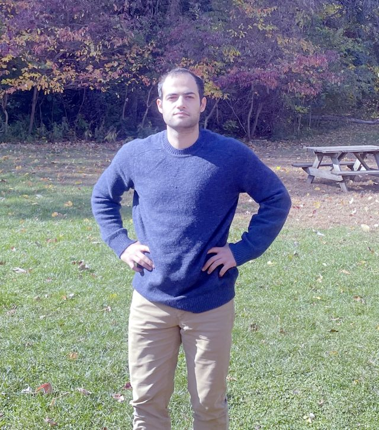
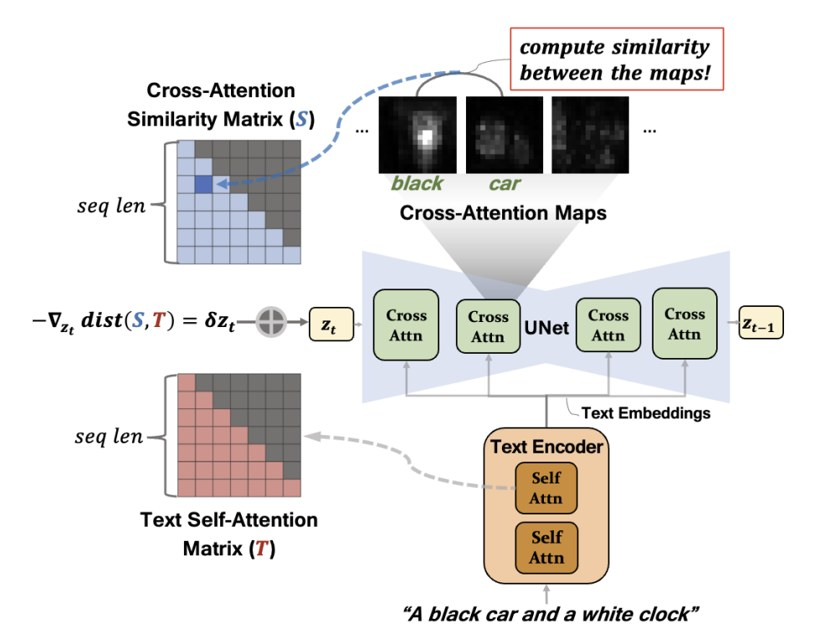

Graduate Research Assistant, Purdue ECE2022 – present
RL post-training of generative models · Advisor: Qiang Qiu
I work on post-training generative models with reinforcement learning: designing rewards that capture what we actually want from a model, and optimizing toward them. My recent work fine-tunes diffusion models with RL using gradient-based influence rewards (ECCV 2026), so that the synthetic data they generate measurably helps downstream classifiers. I am now carrying the same questions (reward design, credit assignment, reward hacking) over to RL post-training of LLMs.
I also study how attention works inside generative models, including training-free attention control for text-to-image alignment (CVPR 2025, co-first author). Before machine learning, I earned a Ph.D. in theoretical physics.

Class-Contrastive Influence scores how much a generated sample helps a downstream classifier. Used as an RL reward, it fine-tunes diffusion models to produce data that improves few-shot medical classification.
GRPO post-training of Qwen2.5-3B search agents; matches Search-R1-3B on multi-hop QA with 0.75% of its training prompts. Studying whether agents learn real multi-hop retrieval or shortcuts, and how reward design changes that.
Cross-attention in diffusion models ignores word relations that the text encoder's self-attention already captures. Steering cross-attention maps toward that structure, with no training, fixes attribute binding and missing objects.
* equal contribution · Full list on Google Scholar
A gradient-based influence score used as an RL reward to fine-tune diffusion models, improving accuracy and robustness over diffusion-augmentation baselines on few-shot medical imaging benchmarks.
@inproceedings{kim2026steering,
title = {Steering Diffusion Models via Class-Contrastive Influence
for Few-Shot Medical Classification},
author = {Kim, Jeeyung and Esmaeili, Erfan and Qiu, Qiang},
booktitle = {Proceedings of the European Conference on Computer Vision (ECCV)},
year = {2026}
}

A training-free method that aligns cross-attention maps with the text encoder's self-attention, improving attribute binding and object fidelity in Stable Diffusion.
@inproceedings{kim2025tsam,
title = {Text Embedding is Not All You Need: Attention Control for
Text-to-Image Semantic Alignment with Text Self-Attention Maps},
author = {Kim, Jeeyung and Esmaeili, Erfan and Qiu, Qiang},
booktitle = {Proceedings of the IEEE/CVF Conference on Computer Vision
and Pattern Recognition (CVPR)},
year = {2025}
}
Earlier work: 7 papers in theoretical physics, listed on Google Scholar.